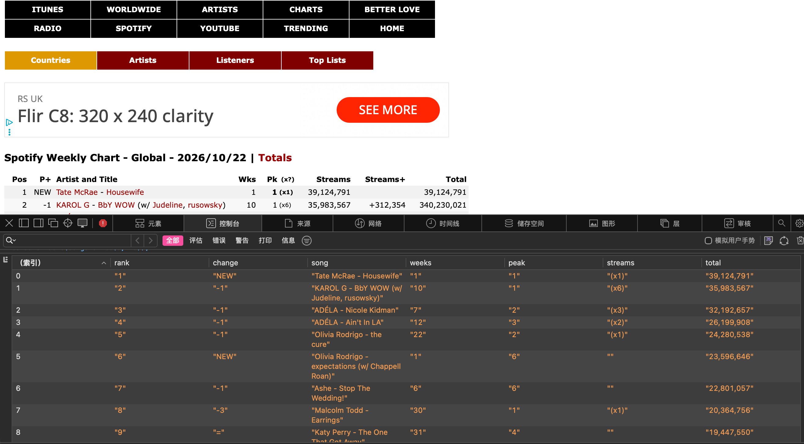
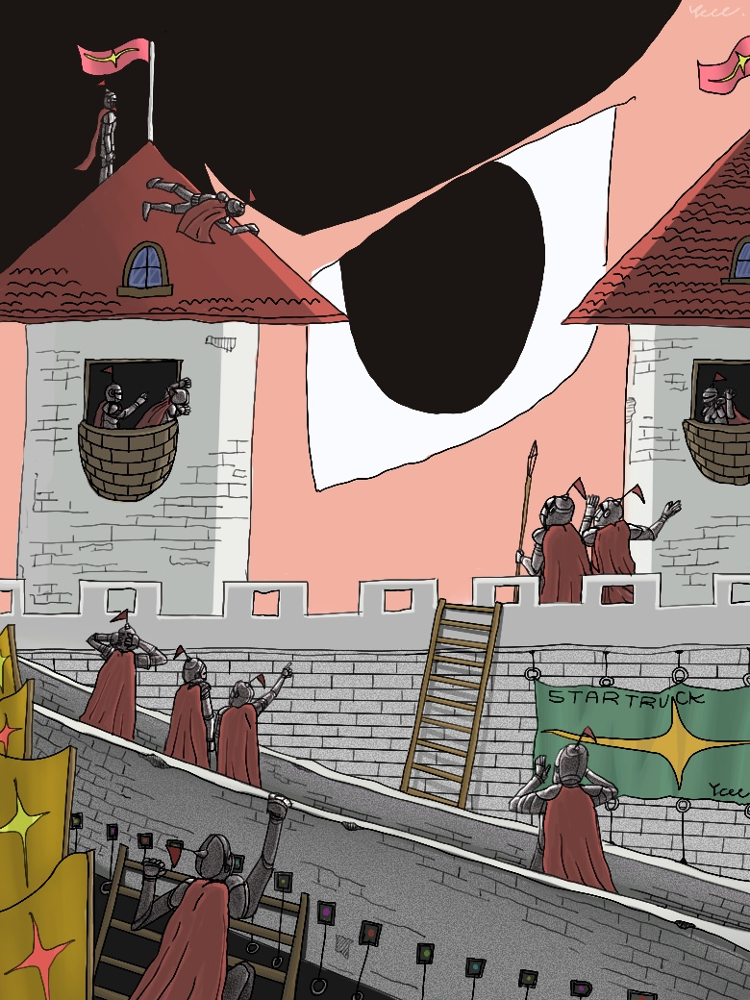

AREA / 001✳
FORM / EXPRESSION
ART &
DESIGN
Images, objects, identities and visual systems.
PORTFOLIO — VOL. 001
Exploring the intersections of art, digital media, visual culture and experimental creation.
EXPLORE THE ARCHIVE ↘A LITTLE ABOUT ME
I am interested in the space between what we see and what we believe.
With a background in Arts and Crafts and a current focus on Digital Media, I explore how visual communication, technology and culture shape the way we understand the world.
This website is a living archive of ideas, experiments, creative interests and ongoing reflections. Not a finished answer, but a work in progress.
WHAT MOVES ME
FORM / EXPRESSION
Images, objects, identities and visual systems.
NETWORK / CULTURE
Platforms, algorithms and everyday digital life.
OBSERVE / QUESTION
Finding patterns and questioning the systems behind them.
MAKE / BREAK / REMAKE
Independent projects, unexpected ideas and new forms.
WEEKLY REFLECTIONS
Notes from the process of learning to see, question and understand digital media differently.
FOUNDATIONS / OBSERVATION
Week 1 introduced core frameworks for understanding digital media. We explored debates about whether technology makes people less capable, compared technological determinism with SCOT, and focused on the social-shaping perspective: technology and society influence each other, so technological outcomes are not fixed. I also learnt the classroom rules for using generative AI to support learning.
TECHNOLOGY / SOCIETY
In week 2’s workshop, we learned about building and hosting personal study-portfolio websites. Three approaches were covered: university-provided CampusPress, hand-coding web pages with HTML & CSS, and publishing static websites through GitHub Pages, where my local HTML-CSS files connect directly to GitHub for public hosting.
CampusPress is simple to use, yet it comes with many restrictions over visual styling. Personally, I prefer writing code myself, because it allows me to create lots of interesting things. I have spent a great deal of time designing my website’s aesthetic. As I am fond of hip-hop-inspired graphic design, I hope to build a portfolio space that combines hip-hop visuals with brutalist style. I am really excited about what I am creating. This has been the best week for me so far. :)
I also have a small complaint: web-page bugs are incredibly tricky to fix. It often takes me hours just to correct one minor display error. XP
DATA / WEB SCRAPING
In this week’s workshop, the tutor introduced web-scraping for digital-media research. We learned about the no-code WebScraper.io extension and Python scripts in Google Colab, and discussed the strengths and limitations of different scraping approaches. We also touched upon ethical concerns around web scraping, such as website terms-of-service, data privacy and responsible data usage.
Building on class learning, I did extra experiments: I scraped Spotify Global Weekly Chart dated 22/10/2026. The extracted data includes chart rank, track title, artist name, weekly streams, peak chart position and total weeks on chart.
I found browser developer tools are very effective for locating page elements. This workflow also works within Safari’s developer tools. Across different operating systems and browsers, I can now scrape most websites without strict security restrictions. This allows me to organise raw data efficiently and build preliminary technical foundations for upcoming database-building coursework.
While doing the practical work, I thought about ethical challenges: even though the chart information is publicly visible, scraping still needs to respect platform rules. I need to avoid overloading servers with frequent requests, and these scraped public datasets should only be used for academic study instead of commercial purposes. Overall, this week had a fairly heavy workload, yet the practical tasks were really engaging.

DATA / RESEARCH
In Week 4’s workshop, our group had to decide on a theme for our dataset. I proposed the research question: how UK universities define acceptable and unacceptable generative-AI use in assessments.
I chose this topic because I initially thought it would be relatively objective. Universities document AI-related rules in official handbooks, and I believed these written documents would help limit subjective bias. Since surveys and interviews were not practical under the task constraints, we used public policy documents as secondary sources and compared Russell-Group and non-Russell-Group universities. I helped collect official web pages and PDF policy materials, and coded qualitative policy texts into seven numerical variables with a supporting codebook. Every entry in our spreadsheet includes source URLs and evidence notes to make our work traceable.
A major practical difficulty emerged: universities set different standards for AI-assisted work. For example, some institutions allow students to write in their native language and then use AI translation tools, while others prohibit this practice. These differences stem from each university’s distinct cultural and educational contexts. Even working with official documents, human subjective interpretation creeps in when converting text into numerical codes. Reducing bias therefore became a key challenge during dataset construction. This resonated with ideas I read in Race After Technology: Abolitionist Tools for the New Jim Code.
This exercise taught me that data is never inherently neutral. Our dataset only reflects written institutional policies rather than real-life enforcement or students’ actual behaviour, and smaller universities are under-represented in our sample. Ethically, condensing nuanced policy into numbers carries risks of misinterpretation; we cannot judge universities as “good” or “bad” purely from coded values. I have learned that datasets are human-constructed, shaped by collection and coding decisions, and classification systems themselves carry power.

THE ARCHIVE REMAINS OPEN
An ongoing process of making, unmaking and seeing things differently.
BACK TO TOP ↑